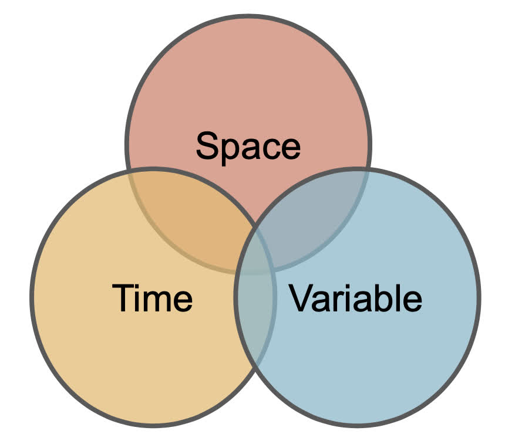

| Name | Description |
|---|---|
| id | The primary resource name or catalog of data assets |
| asset | The subdatasets or assets in the collection |
| URL | The asset URL |
| type | The data format reached by URL (e.g. vrt, opendap) |
| varname | The filename, band name, or dap varname |
| variable | General high order variable type |
| description | Long form description of asset |
| units | The units of the values in the asset |
| model | The name of the model generating data in asset |
| ensemble | model ensemble member of asset |
| scenario | The model scenario of asset |
| duration | Time range of asset represented as {start}/{end} |
| interval | A numeric stride with a unit |
| Tname | The name of the time dimension |
| nT | The number of time layers in the model |
| X1 | The first value in the X coordinate array, typically Xmin |
| Xn | The last value in the X coordinate array, typically Xmax |
| Y1 | The first value in the Y coordinate array, typically Ymin |
| Yn | The last value in the Y coordinate array, typically Ymax |
| Xname | The name of the X dimension |
| Yname | The name of the Y dimension |
| Xres | The resolution of the data in the X direction |
| Yres | The resolution of the data in the Y direction |
| ncols | The number of values in the X direction |
| nrows | The number of grid cells in the Y direction |
| crs | The coordinate reference system expressed as PROJ4 string |
| toptobottom | arrangement of the unfolded data array |
| tiled | is data tiled spatially (XY), temporally (T), or not (NA) |
| dimorder | order of data diminisons (e.g. XYZT) |